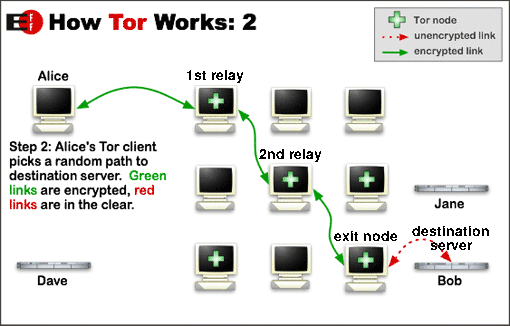

i think if we succeeded to make this idea to becomes true (or even similar ideas if available) then there will be no surveillance what so ever.
(tho , atm its just a dream)

i think if we succeeded to make this idea to becomes true (or even similar ideas if available) then there will be no surveillance what so ever.
(tho , atm its just a dream)
Good day,
you seem to have misunderstood quite a few things, if I understand your graphic correctly.
First of all, Tor is just as encrypted as GNUnet by default, that’s why there can’t be MITM.
Second, I2P is, just like GNUnet, decentralized.
Third, I2P is really slow. It’s far slower than Tor because of its nature and in regards to anonymity only offers a few advantages. I don’t know where you got “increased speed” from.
Have a nice day,
Ego
First of all, Tor is just as encrypted as GNUnet by default, that’s why there can’t be MITM.
what do u mean “there cant be MITM” ? Tor to clearnet (http) what do u think the problem is ? = MITM
but Tor as in-combination with another encrypted layer from the user , then the connection of the Tor has an anonymous IP inside it but not the user IP. e.g:-
current connetion:-
user -> Tor -> website

but if we make it like this:-
user -> I2P -> Tor -> website
MITM going to listen to another encrypted traffic , because Tor traffics will be totally anonymous not just by hiding u from where u were connected from but also from inside.
(maybe that not the case to solve MITM , i dunno but like i said it is theory)
i didnt went down to read gnu Documentations , but i dont know if gnunet encrypted by default.
Second, I2P is, just like GNUnet, decentralized.
but they r separated in the focusness on how to provide the right shot from anonymity/privacy to the user.
Third, I2P is really slow. It’s far slower than Tor because of its
nature and in regards to anonymity only offers a few advantages. I don’t
know where you got “increased speed” from.
yes I2P slow at the moment. but if the millions of Tor users went to use I2P (because there will be no connection to Tor without using I2P) then i think we can call it fast one. thats where i get increased speed from.
this design the useable idea from it , is how it is great if we can combine these 2 or 3 mixtures together in order to have the ultimate anonymity.
Good day,
That is not the fault of Tor. In regards to using Tor, unless stated otherwise it is always to be presumed that accessing a hidden service is meant. Furthermore, you yourself wrote in your graphic under Tor “no MITM” which again, makes anyone presume you talk of accessing a hidden service.
Furthermore, Tor to any https/SSL encrypted site with a standard higher than RC4 is always protected against MITM and co. And after Let’s Encrpyt, there is no excuse for relying on a site without SSL.
That wouldn’t give you any benefit because of the fact that first of all:
I2P’s exit system is basically a really limited set of proxies, which makes attacking you by analyzing the traffic at the exit easier. It’s a game of numbers. There are very few exit nodes (they call them outproxies sometimes) compared to Tor.
Source: http://tor.stackexchange.com/questions/1714/security-advantages-of-tor-over-i2p
And second, the exit node still gets the traffic unencrypted. There is no advantage at all actually, because an exit node already cannot tell who you are by Tor’s design.
Actually, that is not how decentralized networking or I2P works. You see, what I2P does is, it uses the active connections of users to store services and make them accessible. Now, if an user has a very fast setup and keeps his PC turned on at all times, anyone accessing the site will get it rather fastly. However, if he truns his PC of, someone else will have to take over who is statistically speaking always rather slow. Furthermore, if every PC how had a copy of the service gets turned of, noone can access or provide it anymore. Also, if a lot of people access a site simultaniously, not even a “kick-ass” setup will help, as almost no user has the upload speeds and stability necessary to serve a lot of enquiries. Having more people use I2P might make a few (VERY popular) pages run faster for a few months, but keep in mind, that the majority of these people won’t be able to provide enough bandwith in a meaningful way, which would lead to the network actually slowing down, as it now has to serve more people with only a tiny amount of added bandwith.
Like I’ve said, every of these solutions is great on its own, however they were all designed to be rather independent of any other project.
Have a nice day,
Ego
awesome , very thankful for the clarification.
However, if he truns his PC of, someone else will have to take over who is statistically speaking always rather slow.
correct , thats why I2P decided to be implemented I2P as firmware for home routers instead of just a tool in the pc. i designed that as well , u can c it here:-
zzz.i2p/files/i2pconnection.png
or here is it:-
Like I’ve said, every of these solutions is great on its own, however
they were all designed to be rather independent of any other project.
yep correct , tho it would be better to take advantages from one another and come up witha final pure mixture of safety.
hi ,
you may want to read this
http://echelon.i2p/i2p/i2pspeed.txt
you can mix the networks but you need to stay in the network to get any benefit
example (how i connect to my i2p routers)
user(ssh client) -> tor -> hidden service(ssh server) -> i2p -> some i2p site
(ssh does the forwarding and tor connects via (a hidden service) to my i2p router (running somewhere else) and from there on to the desired i2p domain (i hope this makes any sense)
Not a good Idea , i2p requires more Resources than a “normal” home router could handle + there are a lot of non-free software running on them (if you havent bought a proper one or build one and hassled yourself with removing all non free stuff yada yada )
my 2 cents
you can mix the networks but you need to stay in the network to get any benefit
example (how i connect to my i2p routers)
user(ssh client) -> tor -> hidden service(ssh server) -> i2p -> some i2p site
nice idea , worth for a trial.
tho, this is not an supported or isolated project or something that the normal users can get it by just 2 clicks. this is beyond the projects (i2p & tor) r giving for their users. what i want is :- a united project which contain different projects working homogeneously with each other and by default. thats what i think a good idea to solve de-anonymization vulnerabilities.
Not a good Idea , i2p requires more Resources than a “normal” home router could handle
did u saw the design in the image in order to over come this issue ? (dont tell me u didnt saw it  )
)
there are a lot of non-free software running on them (if you havent bought a proper one or build one and hassled yourself with removing all non free stuff yada yada )
if u mean the firmware , there r different open source free firmwares available such as:-
so non-free not an issue on this idea.
feel free to point me to any working i2p"firmware" or a Ticket like you depicted in the image. I cant find any
well … good luck with that …
feel free to point me to any working i2p"firmware" or a Ticket like you depicted in the image. I cant find any
progress working u wont find atm , but the suggested idea u cant find inside zzz forum.
{kind=link}
{kind=link}